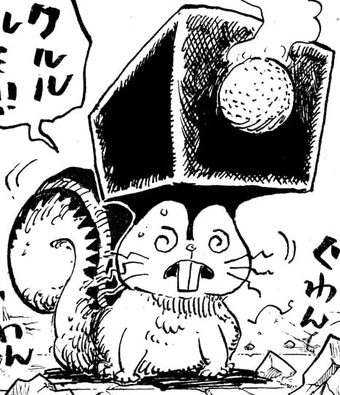

Veja uma breve história clicando aqui
Ficha do personagem
| Características | Detalhe |
|---|---|
| País | Elbaf |
| Raça | Gigantes ancestrais |
| Akuma no mi | Ryu Ryu no Mi, Modelo: Nidhöggr |
| Arma | Martelo ragnir |
| Modelo da fruta | Zoan mitologica |
Família
| Famíliar | Nome |
|---|---|
| Mãe | Rainha Estrid |
| Mãe adotiva | Giganta Ida |
| Pai | Rei Harold |
| Meio-irmão | Hajrudin |
Principais poderes e habilidades
Além de poder se transformar em um dragão negro com poderes de guspir fogo e raio loki tem a posse do martelo sagrado de elbaf que tembém possui uma akuma no mi sendo a do esquilo mitologíca que tem o poder de liberar gelo
Forma dragão

Martelo Ragnir
